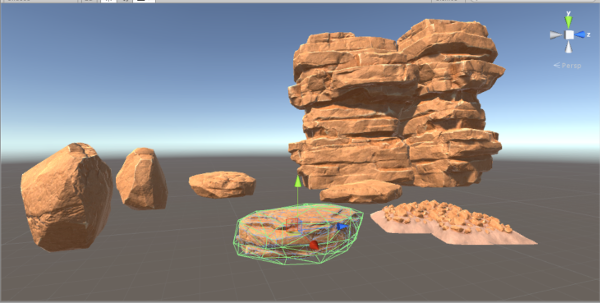
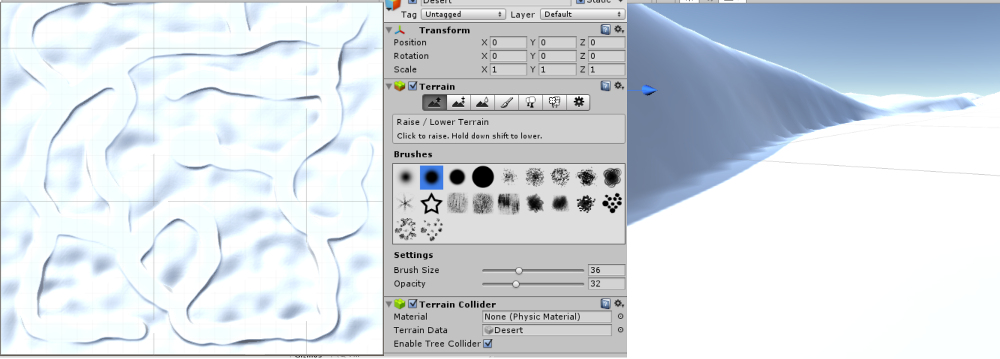
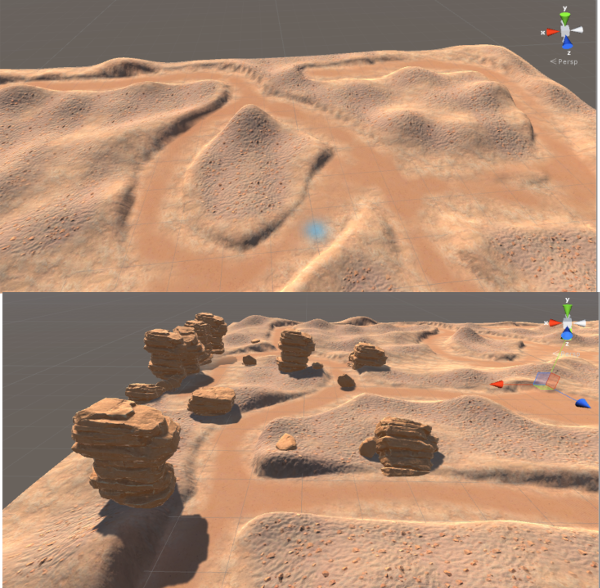

Adventures in Unity

Adventures in Unity
Unity is an amazing platform for building virtual environments, especially games. As anyone who has ever played a game can tell you, virtual environments can affect us emotionally. People might not always remember the name of the main character, the plot, or level details, but people will always remember how certain games made them feel. With this in mind, I believe technology has the ability to heal us emotionally as well.
However, I’m getting ahead of myself. For now, I would like to learn how to create ANY virtual environment, and this is why I decided to dive into Unity 5 with help from this tutorial on PluralSight. I originally intended to get this all together on one post, but now I feel like it makes more sense to split this up into two or three parts.
In this project, I am creating a 3D desert environment with red sand and towering sandstone rocks. The rocks were imported as an asset package in Unity and include a model and a mesh. The model is the basic structure and the mesh is what lays over the structure and gives it additional detail. When you add a mesh as a component to the model, you create a prefab.
In the above picture, you can see all the prefab rocks listed in the project view. I experimented with them in the scene view just to see what they looked like and how they behaved. In the scene view, you can manipulate the position and orientation of each prefab in pretty much whatever way you want.
Now, it was time to give these rocks a home. In Unity, all objects inherit from the GameObject. So, setting up basic terrain was as simple as creating a new GameObject and assigning it X, Y, and Z values until I had a nice light gray rectangular prism. Then I could assume a top-down view and begin creating detail. After creating texture with a brush, like a kid in a sandbox might use his finger, I used another brush tool to carve out paths.
From above, I thought that my terrain might be too small. However, as you can see, the sides on the path can scale quite largely depending on the player’s point of view. Because of this, it is very helpful to place a model of the player in the scene every so often to help gauge scale.
Once that was complete, I added some texture assets to create a sandy, rocky landscape and spotted it with some dried grass. I also placed a bunch of the rock prefabs I had created earlier.
Creating landscapes in Unity is actually quite Zen. I felt like Bob Ross doing a 3D painting.
This place was feeling pretty lonely, so for the next step I added in a little robot buddy. Unfortunately, I didn’t take any screenshots of that process (I know, I’m sorry!). But he was basically another asset model. Actually, he was a few models; each for a different state such as idling, running, or walking. Each state of the model can include an animation component that is triggered to play when certain conditions are met, such as a boolean called IsRunning.
These conditions are controlled via C# scripts that are added as a component to the robot player object. Here is the script for getting robot buddy to move around the terrain:
This is where I am currently running into a bug. The W and S keys control his vertical movement, but the direction is backwards. I have a few ideas on changes I could make, but I’m going to leave it for next time since this is already getting pretty lengthy. Below, you can check out the progress so far!
Next up, I would like to tackle changing camera angle by mouse and giving robot buddy a purpose in this world.